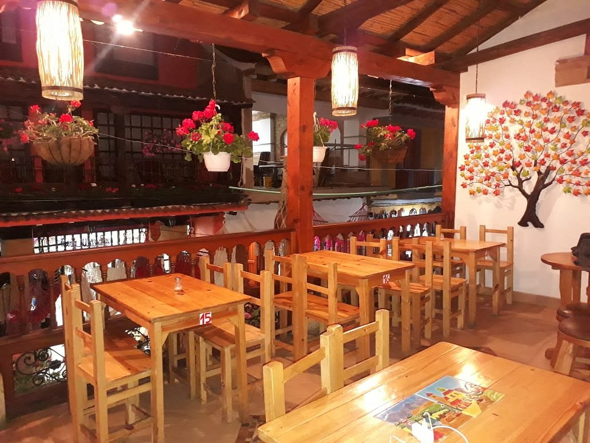
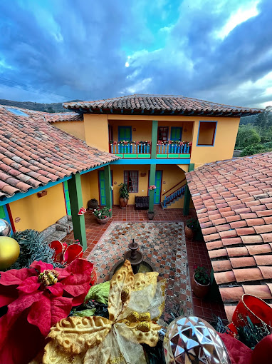
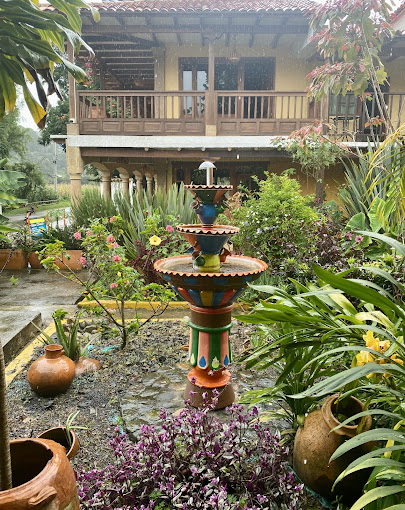
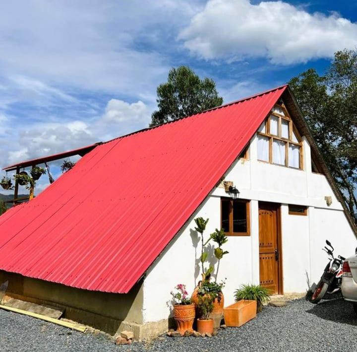
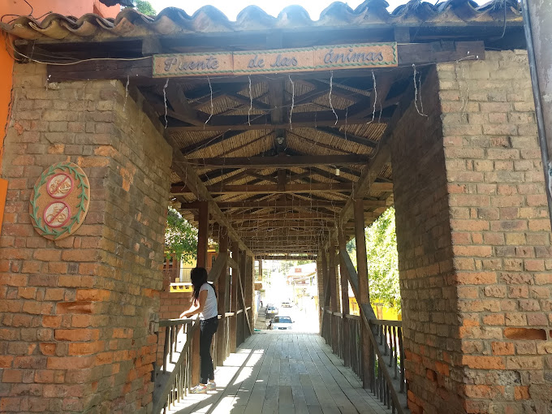

RAQUIRA
Municipio ubicado en Boyacá fundada en 1537 . Es conocido como el "El ceramico de colombia ". Su clima es agradable y sus paisajes naturales impresionantes. Es un lugar ideal para aquellos interesados en la artesania, la cultura y la naturaleza.
Descubre el top 5 que tenemos para ti en:


Lo mejor de la gastronomia

1.LA GUACA RESTAURANTE

2.CAZUELAS BOYACENSES

4.MURICATA

5.DULCE TRADICION
Disfruta de los mejores hoteles

1.POSADA MARIA DEL CARMEN

2.LA CASONA 1865

3.HOSTERIA SAN FERMIN

4.CHALET EL EDEN

5.RESGUARDO REAL
Explora los mejores sitios de Raquira

1.PLAZA DE RAQUIRA

2.CASA AL REVES

4.CASCADA EL ANILLO
